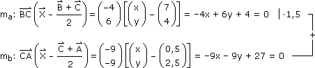

Anhang zu: VEKTORRECHNUNG
EIGENSCHAFTEN DES SKALARPRODUKTS?
Kommutativ: a`·b` = b`·a`
"Aussuchen" bei skalarem Faktor: t(a`·b`) = (ta`)·b` = a`·(tb`)
Distributiv1 zur Addition: a`·(b` + c`) = a`·b` + a`·c`
EIGENSCHAFTEN DES VEKTORPRODUKTS?
Antikommutativ: a`xb` = –b`xa`
"Aussuchen" bei skalarem Faktor: t(a`xb`) = (ta`)xb` = a`x(tb`)
Distributiv1 zur Addition: a`x(b` + c`) = a`xb` + a`xc`
"Erst backen, dann cabben": a`x(b`xc`) = b`x(a`xc`) – c`x(a`xb`) = a`·(a`·c`) – c`·(a`·b`)
1) Distributivität umfasst Links- und Rechtsdistributivität. Aber das eine folgt aus dem anderen, wenn der äußere Operator (anti)kommutativ ist.
ERGÄNZUNG ZU AUFGABE 14:
Der im Skriptum vorgestellte Rechenweg lässt sich abkürzen, wenn wir die Normalvektor- statt der Parameterdarstellung wählen:
Aufgabe: Gegeben ist das Dreieck ABC[ A(–4|–2), B(9|1), C(5|7) ]. Wo liegt der Umkreismittelpunkt?

–15x + 33 = 0  x = 2,2 y = 0,8
x = 2,2 y = 0,8
x = 2,2 y = 0,8